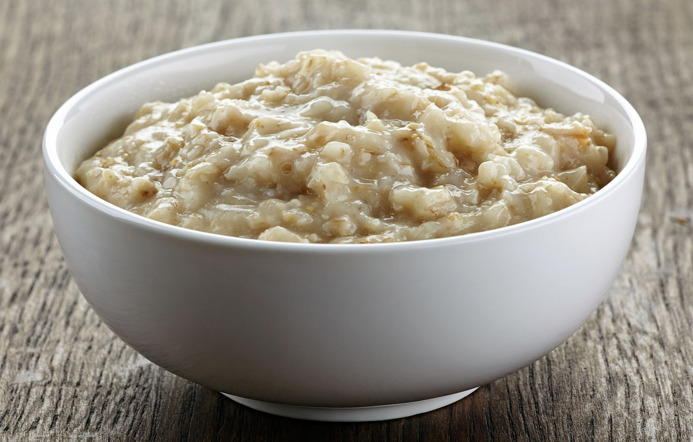

Oatmeal

Description
Oatmeal is a classic breakfast porridge made from oats. It's a warm, comforting dish that's both hearty and healthy, providing a good source of fiber and whole-grain goodness.
Ingredients
- 1/2 cup rolled oats
- 1 cup water
- Pinch of salt
Steps
- Combine and simmer: In a small saucepan, combine oats, liquid, and salt. Bring to a boil over medium heat, then reduce heat to low and simmer, uncovered.
- Cook and stir: Cook for 5-7 minutes (or a bit less for quick-cooking oats), stirring occasionally, until oats are thickened and creamy.
- Enjoy: Remove from heat and let stand for a minute to cool slightly. Stir in your favorite toppings and enjoy!